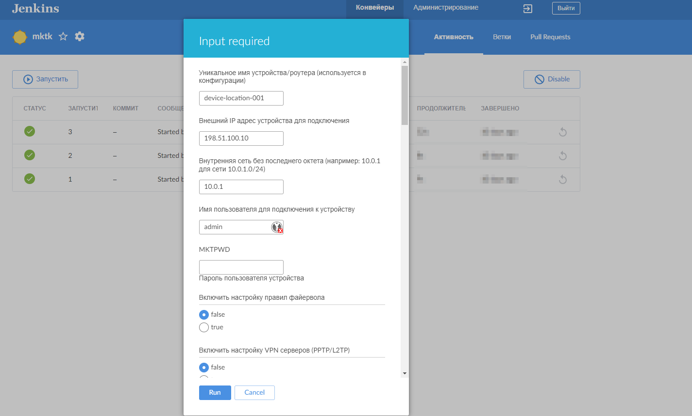
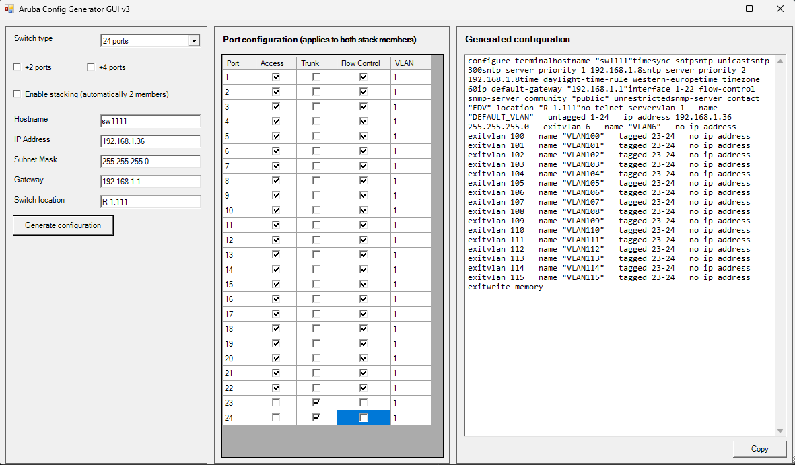

Professional Experience
IfADo, Dortmund (Germany)
System Administrator
• User support (1st/2nd level) and IT infrastructure management
• Administration of Linux servers, network infrastructure, and monitoring systems
• Scripting and automation using PowerShell, Bash, Python, and Go for administrative tasks
• Development of internal tools and applications to optimize workflows
• Configuration and maintenance of monitoring solutions
• Documentation of systems and processes
• Troubleshooting and incident management in daily operations
• Work with medical equipment and PACS/DICOM systems
Confidential Client
Support Team Lead
• Leading a user support team of 7 specialists
• Organizing work processes, task distribution, and staff training
• Solving complex technical issues and coordinating with vendors
• Implementation of ITIL processes and SLA management
• Documentation and reporting to management
Taurt Medical
System Administrator
• Maintenance and administration of servers and workstations in medical environment
• Hardware and software monitoring for critical medical systems
• Support and maintenance of IT-related medical equipment (MRI, CT, X-ray)
• Ensuring compliance with medical data protection regulations
• Emergency response and system recovery procedures
Danone
System Administrator
• Support of branch IT infrastructure for 150+ employees
• Management of user accounts, access rights, and network equipment
• Software installation, updates, and license management
• Implementation of security policies and backup strategies
• Integration with corporate IT systems and policies
Olmax Systems
Local Support Engineer
• Local technical support for office and server equipment
• Network equipment configuration and maintenance
• User workstation setup and troubleshooting
• Hardware diagnostics and replacement
• On-site support and problem resolution
Bank "Nadra"
Service Engineer (ATMs and POS terminals)
• Maintenance, diagnostics, and repair of ATMs and POS terminals
• Ensuring uninterrupted operation of banking equipment
• Cash management and security procedures
• Emergency response to equipment failures
• Customer service and technical support
EPAM DevOps Academy (Autumn 2021)
DevOps Engineer Competencies
Comprehensive training program covering modern DevOps practices, CI/CD pipelines, containerization, and infrastructure automation. Hands-on experience with Linux, Bash, Python, AWS, Docker, Ansible, Terraform, and Jenkins.
Kherson National Technical University
Bachelor's in Computer Engineering
Specialized in computer systems and networks. Coursework included system administration, network protocols, hardware architecture, Cyber Security and software development.
Veeam
Veeam Backup for Microsoft 365 Certificate
Foundational knowledge of M365 backup concepts, data loss scenarios, and Veeam protection strategies.

Veeam
Veeam Data Platform Certificate
Foundational knowledge of Veeam's comprehensive data protection solutions for virtual, physical, and cloud workloads.

Stepik
Introduction to Linux
Linux system fundamentals covering command-line operations, file permissions, user management, process control, service administration, and shell scripting basics.
Stepik
Introduction to Databases
Comprehensive database course covering SQL fundamentals to modern NoSQL solutions. Includes database design, normalization, query optimization, MySQL administration, ORM technologies, and practical database management skills.
3CX
Introduction to Linux
Hands-on experience with 3CX phone system: installation, user management, call routing, and basic troubleshooting.
G.A.S.T
Deutsch-Test für Zuwanderer
B1-Deutsch Zertifikat.

TELC
Deutsch-Test für den Beruf B2
B2-Deutsch Zertifikat.

TÜV Nord
Einzelfallcoaching fit für den Beruf - inklusive berufsbozogener Deutschsprachförderung
Individual coaching for professional readiness, including career-related German language support. The training covered application strategies, development of key competences, enhancement of individual skills in everyday and work situations, and job-specific language proficiency.

My Projects

Jenkins Pipeline for Mikrotik Router Configuration Automation
The MikroTik Router Automation Project standardizes and streamlines the configuration of MikroTik devices across distributed networks. It automates critical setup tasks including interface naming, firewall hardening, VPN server deployment (PPTP/L2TP/IPSec), monitoring integration, and secure configuration backups via Oxidized. Designed for scalability and consistency, the solution uses a parameter-driven approach to support flexible deployment across various site configurations. The system enhances security by disabling insecure services, enforcing access controls, and enabling DDoS and brute-force protection. It also integrates with centralized monitoring and authentication systems (RADIUS, SNMP, email alerts), ensuring reliable operations and auditability. Built with Jenkins, the automation provides a repeatable, traceable, and maintainable process for zero-touch provisioning of edge routers.
EPAM Final Project (CI/CD Pipeline for Spring PetClinic with Jenkins, Terraform, and Ansible)
This project automates the complete delivery lifecycle of the Spring PetClinic application — from code to production. It establishes a seamless, fully automated CI/CD pipeline using Jenkins, Terraform, and Ansible to build, test, containerize, and deploy the application on AWS infrastructure. The pipeline provisions development and production environments on-demand, deploys Dockerized services via Ansible, and optionally tears everything down with a single approval. Every step is traceable and monitored, with real-time Telegram notifications providing instant feedback. Elegant, consistent, and repeatable — it’s infrastructure and deployment automation at its finest.

Aruba Switch Configuration Generator GUI
This project automates the creation of standardized Aruba switch configurations through an intuitive PowerShell-based GUI. Designed for network administrators, it eliminates manual errors by guiding users through a simple interface to define switch models, port roles (Access/Trunk), VLAN assignments, stacking setups, and basic network settings. With features like dynamic port tables, automatic VLAN configuration, and one-click copy-to-clipboard, the tool streamlines deployment for both standalone and stacked switches — making consistent, repeatable switch provisioning fast and accessible to all skill levels.